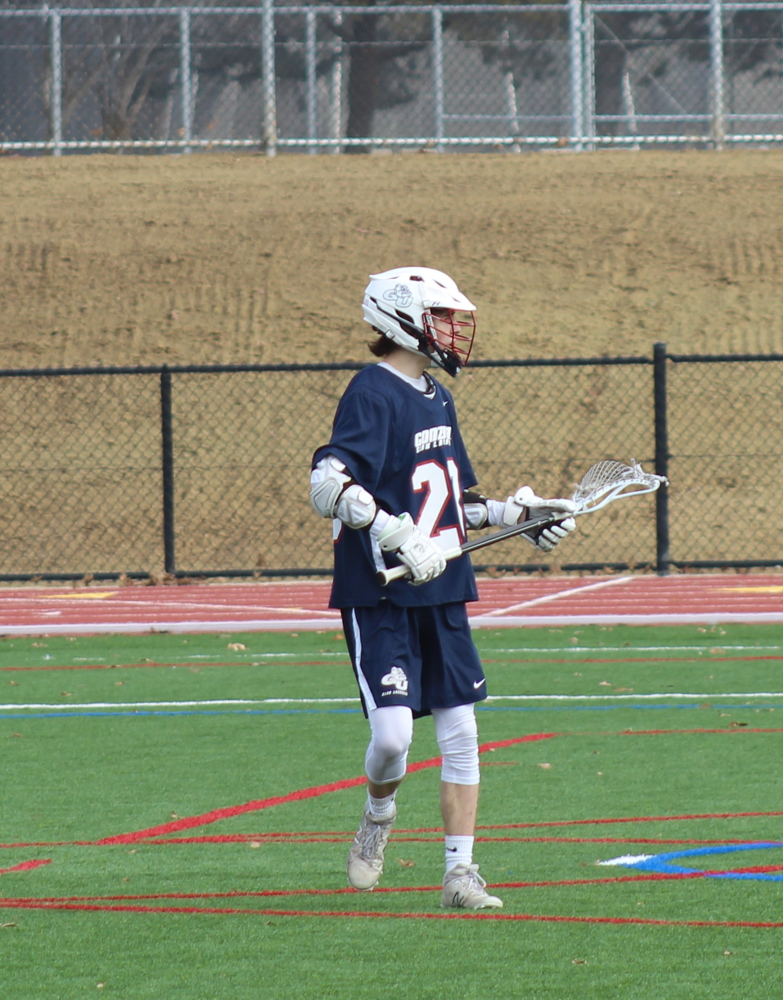

NavigationPersonal ProjectsResume My Github |

About MeHello! My name is Zac Foteff and I am a student at Gonzaga University pursing a Bachelor of Science focused in Computer Science with a minor in Mathematics. I am interested in pursing careers as a backend software developer, or in the computer/network security field. My Journey with computer science began when I was a freshman in highschool. I discovered a Python IDE for iPad called Pythonista during Christmas vacation and experimented with every module I could -- even though I knew nothing about computer syntax, or what a programming language even was at the time. Nevertheless, by the end of the break I was enamoured with the subject of computer science and was certain that I had found something that I wanted to do for the rest of my life. Folowing that discovery, I took every computer science class that my highchool offered and continued to expand my knowlege at Gonzaga. 
My learning isn't just limited to the classroom. I spend much of my free time researching and
designing projects for myself in order to challenge myself and gain practical knowledge of the many different
aspects of computer science. You can find a selection of these projects displayed in the Personal Projects
tab of this website. In addition to various personal projects, I have devoted lots of time to learning
various other skills need in computer science and software development. I have a good understanding of Git
and its various tools for managing workflow, as well as devolping a good understanding of the Linux
operating system. Additionally, I have devoted lots of time towards learning to use and developing with
Arduinos and Raspberry Pis. I especially love developing projects with the Arduino to bridge the gap
between hardware and software. |